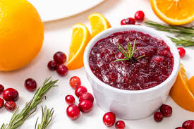

Cranberry Sauce with Orange Juice

Description
This cranberry-orange sauce is a nice tart complement to any holiday feast.
This is a classic!
Ingredients
- 1 cup white sugar
- 1 cup orange juice
- 1 (12 ounce) package fresh cranberries
Steps
-
Combine sugar and orange juice in a medium saucepan over medium heat;
stir until sugar is dissolved. Mix in cranberries; cook, stirring occasionally, until
cranberries start to pop, about 10 minutes.
Transfer to a bowl; sauce will thicken as it cools.